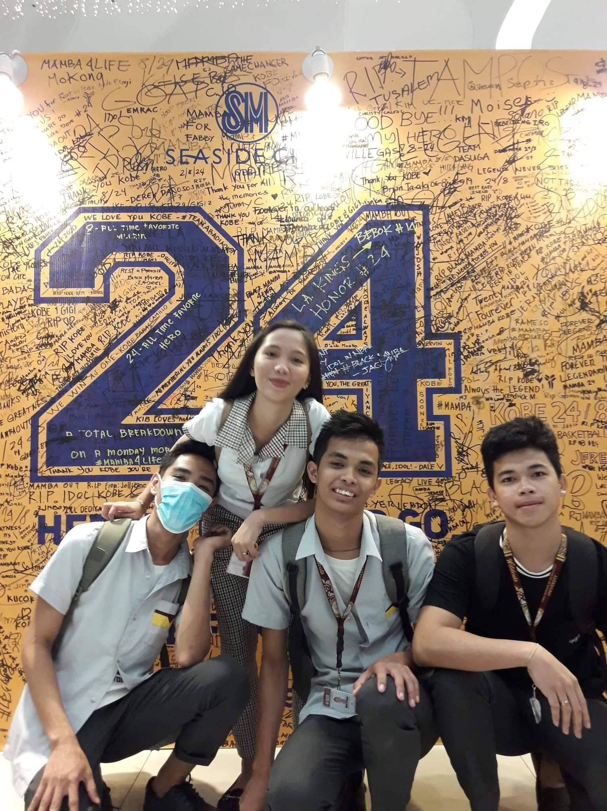

Subscribe
My Academic
Life and Homies
ELEMENTARY DAYS
Way back, when I was a young innocent kid, my life was just peaceful and ordinary. I thought those days of my life were never-ending happiness I only played all day long with my cool friends and went home exhausted. Well, I think my mom was tired of my cluelessness and naughtiness before. Nevertheless, it was fun to be a kid. Everything I wondered, everything I thought, I could do like cool guys, superheroes, and so on. I wish I could turn back time and live like that again where problems don't matter nor exist.
BlackPink Pink Venom
M/V
JUNIOR HIGH DAYS
Looking back when I was a junior student in high school, I still remember the unreasonable stuff I have done. I did a lot of things that made my teachers furious. I was kind of nasty those years and didn't mind what would they say. I was just only thinking about myself rather than their side.However,It was so much fun in junior high because I made lots of friends, and they are the people who spent long days with me. That's why I can't forget them.
TWICE Scientist
M/V
SENIOR HIGH DAYS
When I was in senior high school I began to understand the way of living. I realized that I have to work on myself and discover what other potential I have. I started wondering about decision-makings and equalizing circumstances to have the best version of my life. Maybe, this is what they call " the adjusting stage of life". Well, I agree that as years pass by, in my viewpoint, time will force you to be sensible and educate you to harmonize your life. Luckily, I still have the chance so I am very thankful for that.
AESPA Next Level
M/V
HOMIES
- 